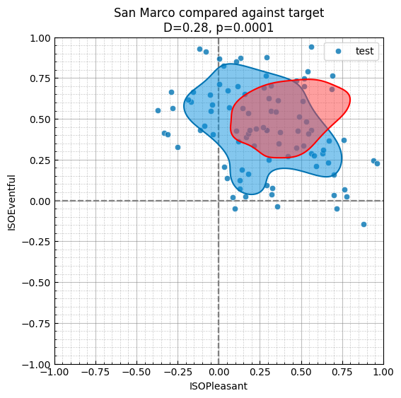
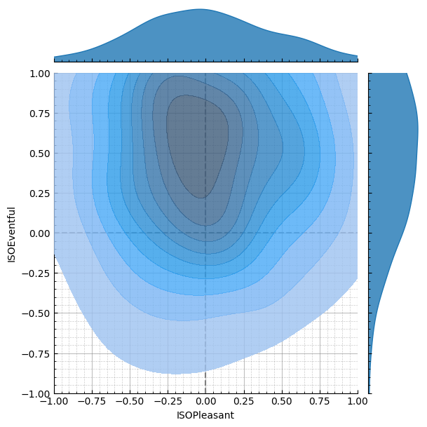

![]()
import soundscapy as sspy
import matplotlib.pyplot as plt
import pandas as pd
from pathlib import Path
import seaborn as sns
from scripts import msn_utils
import scripts.rpyskewnorm as snpy
import numpy as np
from scripts.MultiSkewNorm import MultiSkewNorm
import warnings
warnings.filterwarnings("ignore")1 Setup
1.1 Import Libraries
1.2 Load Data
In addition to loading the latest version of the ISD, we also exclude a few samples that were identified as survey outliers. Most notably, this includes the samples at RegentsParkFields which were impacted by helicopter flyovers.
# Load latest ISD dataset
data = sspy.isd.load()
data, excl_data = sspy.isd.validate(data)
data = data.query("Language != 'cmn'")
# Exclude RegentsParkJapan outliers
# excl_id = list(data.query("LocationID == 'RegentsParkJapan'").query("ISOEventful > 0.72 | ISOEventful < -0.5").index)
# Excluded RegentsParkFields outliers
# excl_id = excl_id + list(data.query("LocationID == 'RegentsParkFields' and ISOPleasant < 0").index) # Helicopters
excl_id = [652, 706, 548, 550, 551, 553, 569, 580, 609, 618, 623, 636, 643]
data.drop(excl_id, inplace=True)
data| LocationID | SessionID | GroupID | RecordID | start_time | end_time | latitude | longitude | Language | Survey_Version | ... | RA_cp90_Max | RA_cp95_Max | THD_THD_Max | THD_Min_Max | THD_Max_Max | THD_L5_Max | THD_L10_Max | THD_L50_Max | THD_L90_Max | THD_L95_Max | |
|---|---|---|---|---|---|---|---|---|---|---|---|---|---|---|---|---|---|---|---|---|---|
| 0 | CarloV | CarloV2 | 2CV12 | 1434 | 2019-05-16 18:46:00 | 2019-05-16 18:56:00 | 37.17685 | -3.590392 | eng | engISO2018 | ... | 8.15 | 6.72 | -0.09 | -11.76 | 54.18 | 34.82 | 26.53 | 5.57 | -9.00 | -10.29 |
| 1 | CarloV | CarloV2 | 2CV12 | 1435 | 2019-05-16 18:46:00 | 2019-05-16 18:56:00 | 37.17685 | -3.590392 | eng | engISO2018 | ... | 8.15 | 6.72 | -0.09 | -11.76 | 54.18 | 34.82 | 26.53 | 5.57 | -9.00 | -10.29 |
| 2 | CarloV | CarloV2 | 2CV13 | 1430 | 2019-05-16 19:02:00 | 2019-05-16 19:12:00 | 37.17685 | -3.590392 | eng | engISO2018 | ... | 5.00 | 3.91 | -2.10 | -19.32 | 72.52 | 32.33 | 24.52 | 0.25 | -16.30 | -17.33 |
| 3 | CarloV | CarloV2 | 2CV13 | 1431 | 2019-05-16 19:02:00 | 2019-05-16 19:12:00 | 37.17685 | -3.590392 | eng | engISO2018 | ... | 5.00 | 3.91 | -2.10 | -19.32 | 72.52 | 32.33 | 24.52 | 0.25 | -16.30 | -17.33 |
| 4 | CarloV | CarloV2 | 2CV13 | 1432 | 2019-05-16 19:02:00 | 2019-05-16 19:12:00 | 37.17685 | -3.590392 | eng | engISO2018 | ... | 5.00 | 3.91 | -2.10 | -19.32 | 72.52 | 32.33 | 24.52 | 0.25 | -16.30 | -17.33 |
| ... | ... | ... | ... | ... | ... | ... | ... | ... | ... | ... | ... | ... | ... | ... | ... | ... | ... | ... | ... | ... | ... |
| 1693 | Noorderplantsoen | Noorderplantsoen1 | NP161 | 61 | 2020-03-11 12:42:00 | 2020-03-11 12:55:00 | NaN | NaN | nld | nldSSIDv1 | ... | 2.54 | 2.00 | -3.17 | -11.97 | 59.64 | 37.87 | 26.54 | 6.33 | -9.79 | -10.34 |
| 1694 | Noorderplantsoen | Noorderplantsoen1 | NP162 | 63 | 2020-03-11 12:39:00 | 2020-03-11 13:00:00 | NaN | NaN | nld | nldSSIDv1 | ... | NaN | NaN | NaN | NaN | NaN | NaN | NaN | NaN | NaN | NaN |
| 1695 | Noorderplantsoen | Noorderplantsoen1 | NP162 | 62 | 2020-03-11 12:54:00 | 2020-03-11 12:58:00 | NaN | NaN | nld | nldSSIDv1 | ... | NaN | NaN | NaN | NaN | NaN | NaN | NaN | NaN | NaN | NaN |
| 1696 | Noorderplantsoen | Noorderplantsoen1 | NP162 | 64 | 2020-03-11 12:56:00 | 2020-03-11 12:59:00 | NaN | NaN | nld | nldSSIDv1 | ... | NaN | NaN | NaN | NaN | NaN | NaN | NaN | NaN | NaN | NaN |
| 1697 | Noorderplantsoen | Noorderplantsoen1 | NP163 | 70 | 2020-03-11 23:08:00 | 2020-03-11 23:18:00 | NaN | NaN | nld | nldSSIDv1 | ... | 2.58 | 1.99 | -3.20 | -9.67 | 57.99 | 35.54 | 29.32 | 8.86 | -5.61 | -6.71 |
1648 rows × 142 columns
1.2.1 ISOCoordinate calculation according to Aletta et. al. (2024)
To move the 8-item PAQ responses into the 2-dimensional circumplex space, we use the projection method first presented in ISO 12913-3:2018. This projection method and its associated formulae were recently updated further in Aletta et al. (2024) to include a correction for the language in which the survey was conducted. The formulae are as follows:
% \begin{align*} P_{ISO} = \frac{1}{\lambda_{pl}} \sum_{i=1}^{8} \cos \theta_i \cdot \sigma_i \\ E_{ISO} = \frac{1}{\lambda_{pl}} \sum_{i=1}^{8} \sin \theta_i \cdot \sigma_i % \end{align*}
where $_i$ is the response to the (i)th item of the PAQ. The resulting (x) and (y) values are then used to calculate the polar angle () and the radial distance (r) as follows:
from soundscapy.surveys.survey_utils import LANGUAGE_ANGLES, PAQ_IDS
LANGUAGE_ANGLES{'eng': (0, 46, 94, 138, 177, 241, 275, 340),
'arb': (0, 36, 45, 135, 167, 201, 242, 308),
'cmn': (0, 18, 38, 154, 171, 196, 217, 318),
'hrv': (0, 84, 93, 160, 173, 243, 273, 354),
'nld': (0, 43, 111, 125, 174, 257, 307, 341),
'deu': (0, 64, 97, 132, 182, 254, 282, 336),
'ell': (0, 72, 86, 133, 161, 233, 267, 328),
'ind': (0, 53, 104, 123, 139, 202, 284, 308),
'ita': (0, 57, 104, 143, 170, 274, 285, 336),
'spa': (0, 41, 103, 147, 174, 238, 279, 332),
'swe': (0, 66, 87, 146, 175, 249, 275, 335),
'tur': (0, 55, 97, 106, 157, 254, 289, 313)}tab = pd.DataFrame.from_dict(LANGUAGE_ANGLES, orient="index", columns=PAQ_IDS)
tab| PAQ1 | PAQ2 | PAQ3 | PAQ4 | PAQ5 | PAQ6 | PAQ7 | PAQ8 | |
|---|---|---|---|---|---|---|---|---|
| eng | 0 | 46 | 94 | 138 | 177 | 241 | 275 | 340 |
| arb | 0 | 36 | 45 | 135 | 167 | 201 | 242 | 308 |
| cmn | 0 | 18 | 38 | 154 | 171 | 196 | 217 | 318 |
| hrv | 0 | 84 | 93 | 160 | 173 | 243 | 273 | 354 |
| nld | 0 | 43 | 111 | 125 | 174 | 257 | 307 | 341 |
| deu | 0 | 64 | 97 | 132 | 182 | 254 | 282 | 336 |
| ell | 0 | 72 | 86 | 133 | 161 | 233 | 267 | 328 |
| ind | 0 | 53 | 104 | 123 | 139 | 202 | 284 | 308 |
| ita | 0 | 57 | 104 | 143 | 170 | 274 | 285 | 336 |
| spa | 0 | 41 | 103 | 147 | 174 | 238 | 279 | 332 |
| swe | 0 | 66 | 87 | 146 | 175 | 249 | 275 | 335 |
| tur | 0 | 55 | 97 | 106 | 157 | 254 | 289 | 313 |
from soundscapy.surveys.survey_utils import PAQ_IDS
for i, row in data.iterrows():
lang = row["Language"]
angles = LANGUAGE_ANGLES[lang]
iso_pl, iso_ev = (
sspy.surveys.processing._adj_iso_pl(row[PAQ_IDS], angles, scale=4),
sspy.surveys.processing._adj_iso_ev(row[PAQ_IDS], angles, scale=4),
)
data.loc[i, "ISOPleasant"] = iso_pl
data.loc[i, "ISOEventful"] = iso_ev
data_list = [
sspy.isd.select_location_ids(data, loc) for loc in data["LocationID"].unique()
]
fig = sspy.plotting.create_circumplex_subplots(
data_list,
plot_type="density",
nrows=6,
ncols=3,
figsize=(9, 18),
legend=True,
incl_scatter=True,
subtitles=[loc for loc in data["LocationID"].unique()],
title="",
)
fig.tight_layout()# Plotting distribution density with empirical scatter
def empirical_msn_scatter(data, loc):
loc_msn = MultiSkewNorm()
loc_msn.fit(
data=data.query(f"LocationID == '{loc}'")[["ISOPleasant", "ISOEventful"]]
)
loc_msn.sample(1000)
loc_Y = pd.DataFrame(loc_msn.sample_data, columns=["ISOPleasant", "ISOEventful"])
return loc_Y
data_list = [empirical_msn_scatter(data, loc) for loc in data["LocationID"].unique()]
fig = sspy.plotting.create_circumplex_subplots(
data_list,
plot_type="density",
nrows=6,
ncols=3,
figsize=(9, 18),
legend=True,
incl_scatter=True,
subtitles=[loc for loc in data["LocationID"].unique()],
title="",
)
fig.tight_layout()1.3 The Soundscape Perception Index (SPI)
The SPI works by assessing the assessed (or calculated) distribution of soundscape responses against a target distribution. This target distribution represents the goal for the soundscape design. Since we consider a location’s soundscape perception to be the collective perception of its users, it is crucial that the target includes both the central tendency and the distribution.
1.3.1 Note: Distributions in the circumplex
We should begin by discussing how soundscape circumplex distributions are defined. The circumplex is defined by two axes: P_{ISO} and E_{ISO} which are limited to the range [-1,1]. Typically the distribution of collective perception of a soundscape is also not symmetrical, therefore making it a skewed distribution. A soundscape distribution is thus a two-dimensional truncated skew-normal distribution.
The skew-normal distribution is defined by three parameters: location, scale and shape. The location parameter defines the centre of the distribution, the scale parameter defines the spread of the distribution, and the shape parameter defines the skew of the distribution. The skew-normal distribution is defined as:
f(x; a, \omega, \alpha) = \frac{2}{\omega} \phi \left( \frac{x-a}{\omega} \right) \Phi \left( \alpha \frac{x-a}{\omega} \right)
where \phi and \Phi are the standard normal probability density function and cumulative distribution function respectively. The skew-normal distribution is thus a generalisation of the normal distribution, with the shape parameter \alpha defining the skew. A positive shape parameter results in a right-skewed distribution, and a negative shape parameter results in a left-skewed distribution.
Truncated skew-normal distribution: https://www-tandfonline-com.libproxy.ucl.ac.uk/doi/epdf/10.1080/03610910902936109?needAccess=true
To generate the truncated skew-normal distribution, we use rejection sampling. This is a method of generating a distribution by sampling from a simpler distribution and rejecting samples that do not fit the target distribution. In this case, we sample from a skew-normal distribution (scipy.stats.skewnorm) and reject samples that are outside of the range [-1,1].
1.3.1.1 Example - Calculating the moments of location’s distribution and generating the equivalent distribution using rejection sampling
test_loc = "SanMarco"
test_data = sspy.isd.select_location_ids(data, test_loc)
msn = MultiSkewNorm()
msn.fit(data=test_data[["ISOPleasant", "ISOEventful"]])
msn.summary()Fitted from data. n = 96
Direct Parameters:
xi: [[0.06 0.597]]
omega: [[ 0.15 -0.058]
[-0.058 0.093]]
alpha: [ 0.868 -0.561]
Centred Parameters:
mean: [[0.281 0.447]]
sigma: [[ 0.101 -0.025]
[-0.025 0.07 ]]
skew: [ 0.145 -0.078]Y = msn.sample(1000, return_sample=True)
Y = pd.DataFrame(Y, columns=["ISOPleasant", "ISOEventful"])
D, p = msn.ks2ds(test_data[["ISOPleasant", "ISOEventful"]])
color = sns.color_palette("colorblind", 1)[0]
fig, axes = plt.subplots(1, 2, figsize=(12, 6))
sspy.density_plot(
test_data,
ax=axes[0],
density_type="full",
title=f"a) Empirical data",
color=color,
)
sspy.density_plot(
Y,
ax=axes[1],
density_type="full",
title="b) MSN sampled distribution\n n sample = 1000",
color=color,
)
plt.tight_layout()# Hack using alpha dev version of soundscapy
from soundscapy.plotting.circumplex_plot import (
CircumplexPlot,
Backend,
CircumplexPlotParams,
)
Y = msn.sample(1000, return_sample=True)
Y = pd.DataFrame(Y, columns=["ISOPleasant", "ISOEventful"])
D, p = msn.ks2ds(test_data[["ISOPleasant", "ISOEventful"]])
params = CircumplexPlotParams(title="a) Sample data for Piazza San Marco")
plot = CircumplexPlot(test_data, params, backend=Backend.SEABORN)
g = plot.jointplot()
g.get_figure()[0].suptitle("a) Sample data for Piazza San Marco", y=1.02)
g.show()
params = CircumplexPlotParams(title="b) MSN sampled distribution\n n sample = 1000")
plot = CircumplexPlot(Y, params, backend=Backend.SEABORN)
g = plot.jointplot()
g.get_figure()[0].suptitle("b) MSN sampled distribution\n n sample = 1000", y=1.05)
g.show()
# Universal pleasant target
target_1 = MultiSkewNorm()
target_1.define_dp(
xi=np.array([0.5, 0.0]),
omega=np.array([[0.2, 0], [0, 0.2]]),
alpha=np.array([1, 0]),
)
target_2 = MultiSkewNorm()
target_2.define_dp(
xi=np.array([[1.0, -0.4]]),
omega=np.array([[0.17, -0.04], [-0.04, 0.09]]),
alpha=np.array([-8, 1]),
)
target_3 = MultiSkewNorm()
target_3.define_dp(
xi=np.array([0.5, 0.7]),
omega=np.array([[0.1, 0.05], [0.05, 0.1]]),
alpha=np.array([0, -5]),
)
Y_1 = target_1.sample(1000, return_sample=True)
Y_1 = pd.DataFrame(Y_1, columns=["ISOPleasant", "ISOEventful"])
Y_2 = target_2.sample(1000, return_sample=True)
Y_2 = pd.DataFrame(Y_2, columns=["ISOPleasant", "ISOEventful"])
Y_3 = target_3.sample(1000, return_sample=True)
Y_3 = pd.DataFrame(Y_3, columns=["ISOPleasant", "ISOEventful"])fig, axes = plt.subplots(1, 3, figsize=(18, 6))
sspy.density_plot(
Y_1,
ax=axes[0],
title="a) Target 1",
color="red",
)
sspy.density_plot(Y_2, ax=axes[1], title="b) Target 2", color="red")
sspy.density_plot(Y_3, ax=axes[2], title="c) Target 3", color="red")
plt.tight_layout()
plt.show()D_1 = msn_utils.ks2d2s(
test_data=test_data[["ISOPleasant", "ISOEventful"]], target_data=Y_1, extra=True
)
D_2 = msn_utils.ks2d2s(
test_data=test_data[["ISOPleasant", "ISOEventful"]], target_data=Y_2, extra=True
)
D_3 = msn_utils.ks2d2s(
test_data=test_data[["ISOPleasant", "ISOEventful"]], target_data=Y_3, extra=True
)from IPython.display import Markdown
from tabulate import tabulate
D_tbl = [
["tgt_1", D_1[1].round(2), D_1[0]],
["tgt_2", D_2[1].round(2), D_2[0]],
["tgt_3", D_3[1].round(2), D_2[0]],
]
Markdown(tabulate(D_tbl, headers=["Target", "D", "p"], tablefmt="grid"))| Target | D | |
|---|---|---|
| tgt_1 | 0.66 | 6.94745e-25 |
| tgt_2 | 0.83 | 8.96388e-39 |
| tgt_3 | 0.28 | 8.96388e-39 |
fig, ax = plt.subplots(figsize=(6, 6))
sspy.density_plot(
sspy.isd.select_location_ids(data, "SanMarco"),
ax=ax,
simple_density=True,
label="test",
incl_scatter=True,
incl_outline=True,
color=sns.palettes.color_palette("colorblind", 1)[0],
)
sspy.density_plot(
pd.DataFrame(
{
"ISOPleasant": target_3.sample_data[:, 0],
"ISOEventful": target_3.sample_data[:, 1],
}
),
ax=ax,
incl_scatter=False,
incl_outline=True,
simple_density=True,
label="target",
title=f"San Marco compared against target\nD={D_3[1].round(2)}, p={D_3[0].round(4)}",
color="red",
)
spis = {}
for location in data.LocationID.unique():
loc_data = sspy.isd.select_location_ids(data, location)[
["ISOPleasant", "ISOEventful"]
]
spi_res = [msn_utils.spi(loc_data, target_data) for target_data in [Y_1, Y_2, Y_3]]
spis[location] = spi_res
spis_df = pd.DataFrame(spis).T
spis_df.columns = ["tgt_1", "tgt_2", "tgt_3"]
# spis_dfdef table_fill(spis_df, idx):
tgt_1_order = spis_df["tgt_1"].sort_values(ascending=False)
tgt_2_order = spis_df["tgt_2"].sort_values(ascending=False)
tgt_3_order = spis_df["tgt_3"].sort_values(ascending=False)
def tgt_str(tgt_order, idx):
return f"{tgt_order.values[idx]} {tgt_order.index[idx]}"
return [
f"{idx+1}",
tgt_str(tgt_1_order, idx),
tgt_str(tgt_2_order, idx),
tgt_str(tgt_3_order, idx),
]spis_tbl = [table_fill(spis_df, idx) for idx in range(len(spis_df))]
tabulate.PRESERVE_WHITESPACE = True
Markdown(
tabulate(
spis_tbl,
headers=[
"Ranking",
"$SPI_1$ (pleasant)",
"$SPI_2$ (calm)",
"$SPI_3$ (vibrant)",
],
tablefmt="pipe",
)
)| Ranking | SPI_1 (pleasant) | SPI_2 (calm) | SPI_3 (vibrant) |
|---|---|---|---|
| 1 | 70 RegentsParkFields | 61 CampoPrincipe | 71 SanMarco |
| 2 | 69 CarloV | 52 CarloV | 62 TateModern |
| 3 | 65 RegentsParkJapan | 50 PlazaBibRambla | 60 StPaulsCross |
| 4 | 62 CampoPrincipe | 49 RegentsParkFields | 58 Noorderplantsoen |
| 5 | 61 PlazaBibRambla | 45 MarchmontGarden | 55 PancrasLock |
| 6 | 61 RussellSq | 44 MonumentoGaribaldi | 54 TorringtonSq |
| 7 | 61 MarchmontGarden | 40 RussellSq | 48 StPaulsRow |
| 8 | 61 MonumentoGaribaldi | 38 RegentsParkJapan | 48 RussellSq |
| 9 | 59 PancrasLock | 38 PancrasLock | 47 MiradorSanNicolas |
| 10 | 53 StPaulsCross | 32 MiradorSanNicolas | 43 CamdenTown |
| 11 | 49 TateModern | 30 TateModern | 40 CarloV |
| 12 | 48 StPaulsRow | 30 StPaulsCross | 36 MonumentoGaribaldi |
| 13 | 43 MiradorSanNicolas | 28 TorringtonSq | 34 MarchmontGarden |
| 14 | 38 Noorderplantsoen | 28 StPaulsRow | 33 PlazaBibRambla |
| 15 | 35 TorringtonSq | 17 SanMarco | 33 CampoPrincipe |
| 16 | 33 SanMarco | 16 Noorderplantsoen | 32 EustonTap |
| 17 | 21 CamdenTown | 15 CamdenTown | 27 RegentsParkFields |
| 18 | 15 EustonTap | 13 EustonTap | 27 RegentsParkJapan |
spis_df["tgt_1"].sort_values(ascending=False)RegentsParkFields 70
CarloV 69
RegentsParkJapan 65
CampoPrincipe 62
PlazaBibRambla 61
RussellSq 61
MarchmontGarden 61
MonumentoGaribaldi 61
PancrasLock 59
StPaulsCross 53
TateModern 49
StPaulsRow 48
MiradorSanNicolas 43
Noorderplantsoen 38
TorringtonSq 35
SanMarco 33
CamdenTown 21
EustonTap 15
Name: tgt_1, dtype: int64target = MultiSkewNorm()
target.define_dp(
xi=np.array([0.5, 0.7]),
omega=np.array([[0.1, 0.05], [0.05, 0.1]]),
alpha=np.array([0, -5]),
)
target.sample(1000)
target.sspy_plot()fig, axes = plt.subplots(1, 2, figsize=(12, 6))
sspy.density_plot(
test_data,
incl_scatter=True,
title="San Marco\nEmpirical Density",
ax=axes[0],
color="blue",
)
sspy.density_plot(
pd.DataFrame(target.sample_data, columns=["ISOPleasant", "ISOEventful"]),
incl_scatter=True,
title="Target Density",
ax=axes[1],
color="red",
)Once the target is defined, we will generate a set of points that represent the target distribution.
Now that our target has been defined, we can calculate the SPI for a given set of responses. We will use the responses from Piazza San Marco in Venice, Italy, as an example.
test_spi = target.spi(
data.query("LocationID == 'SanMarco'")[["ISOPleasant", "ISOEventful"]]
)
print(f"San Marco SPI = {test_spi}")San Marco SPI = 71fig, ax = plt.subplots(figsize=(6, 6))
sspy.density_plot(
sspy.isd.select_location_ids(data, "SanMarco"),
ax=ax,
simple_density=True,
title=f"",
color="blue",
)
sspy.density_plot(
pd.DataFrame(target.sample_data, columns=["ISOPleasant", "ISOEventful"]),
ax=ax,
incl_scatter=False,
simple_density=True,
title=f"Piazza San Marco\nSPI = {test_spi}",
color="red",
)We can compare this against another location, such as St Pancras Lock.
test_spi = target.spi(
sspy.isd.select_location_ids(data, "PancrasLock")[["ISOPleasant", "ISOEventful"]]
)
fig, ax = plt.subplots(figsize=(6, 6))
sspy.density_plot(
sspy.isd.select_location_ids(data, "RegentsParkFields"),
ax=ax,
simple_density=True,
title=f"",
color="blue",
)
sspy.density_plot(
pd.DataFrame(target.sample_data, columns=["ISOPleasant", "ISOEventful"]),
ax=ax,
incl_scatter=False,
simple_density=True,
title=f"Pancras Lock\nSPI = {test_spi}",
color="red",
)SPI scores assessed against a target should not inherently be considered a measure of the quality of the soundscape - instead it reflects the degree to which the soundscape matches the target. A high SPI score does not necessarily mean that the soundscape is of high quality, but rather that the soundscape is of high quality according to the target.
The SPI_{bespoke} thus provides a method for scoring and ranking the success of a soundscape design against the designer’s goals. Sticking with our defined target, we can assess all of the locations in the ISD and see which locations best match our target.
loc_bespoke = {}
for location in data.LocationID.unique():
loc_bespoke[location] = target.spi(
sspy.isd.select_location_ids(data, location)[["ISOPleasant", "ISOEventful"]]
)
loc_bespoke = pd.DataFrame.from_dict(loc_bespoke, orient="index", columns=["SPI"])
loc_bespoke.sort_values(by="SPI", ascending=False, inplace=True)
loc_bespoke| SPI | |
|---|---|
| SanMarco | 71 |
| TateModern | 61 |
| Noorderplantsoen | 61 |
| StPaulsCross | 59 |
| TorringtonSq | 54 |
| PancrasLock | 53 |
| StPaulsRow | 47 |
| RussellSq | 46 |
| MiradorSanNicolas | 46 |
| CamdenTown | 43 |
| CarloV | 40 |
| MonumentoGaribaldi | 36 |
| MarchmontGarden | 35 |
| PlazaBibRambla | 35 |
| CampoPrincipe | 33 |
| EustonTap | 31 |
| RegentsParkJapan | 27 |
| RegentsParkFields | 25 |
Assessed against a different target would result in a different ranking:
target = MultiSkewNorm()
target.define_dp(
np.array([-0.5, -0.5]),
np.array([[0.1, 0], [0, 0.2]]),
np.array([-0.85, 1.5]),
)
target.summary()
target.sample(n=1000)
target.sspy_plot()Fitted from direct parameters.
Direct Parameters:
xi: [-0.5 -0.5]
omega: [[0.1 0. ]
[0. 0.2]]
alpha: [-0.85 1.5 ]
Noneloc_bespoke_2 = {}
for location in data.LocationID.unique():
loc_bespoke_2[location] = target.spi(
sspy.isd.select_location_ids(data, location)[["ISOPleasant", "ISOEventful"]]
)
loc_bespoke_2 = pd.DataFrame.from_dict(loc_bespoke_2, orient="index", columns=["SPI"])
loc_bespoke_2.sort_values(by="SPI", ascending=False, inplace=True)
loc_bespoke_2| SPI | |
|---|---|
| EustonTap | 30 |
| CamdenTown | 22 |
| MarchmontGarden | 19 |
| TorringtonSq | 19 |
| PancrasLock | 17 |
| PlazaBibRambla | 15 |
| StPaulsRow | 15 |
| CampoPrincipe | 11 |
| StPaulsCross | 11 |
| RegentsParkJapan | 8 |
| RussellSq | 8 |
| CarloV | 8 |
| SanMarco | 8 |
| TateModern | 8 |
| MiradorSanNicolas | 6 |
| MonumentoGaribaldi | 5 |
| Noorderplantsoen | 4 |
| RegentsParkFields | 3 |
target1 = MultiSkewNorm()
target1.define_dp(
np.array([-0.5, 0.5]), np.array([[0.1, 0], [0, 0.1]]), np.array([0, 0])
)
target1.sample()
target2 = MultiSkewNorm()
target2.define_dp(np.array([0.5, 0]), np.array([[0.1, 0], [0, 0.2]]), np.array([0, 0]))
target2.sample()
target_mix_y = target1.sample_data + target2.sample_data
target_mix_y = pd.DataFrame(target_mix_y, columns=["ISOPleasant", "ISOEventful"])
plot = CircumplexPlot(target_mix_y, backend=Backend.SEABORN)
g = plot.jointplot()
g.show()
References
Aletta, Francesco, Andrew Mitchell, Tin Oberman, Jian Kang, Sara Khelil, Tallal Abdel Karim Bouzir, Djihed Berkouk, et al. 2024. “Soundscape Descriptors in Eighteen Languages: Translation and Validation Through Listening Experiments.” Applied Acoustics 224 (September): 110109. https://doi.org/10.1016/j.apacoust.2024.110109.
Reuse
Citation
BibTeX citation:
@online{mitchell2024,
author = {Mitchell, Andrew and Mitchell, Andrew},
title = {Exploring Defining Single Value Indices - {SPI}},
date = {2024-11-07},
url = {https://drandrewmitchell.com/research/papers/2024-10-30_JASA1112_SPI/notebooks/SingleIndex-Code.html},
langid = {en},
abstract = {This notebook contains several explorations and
developments leading to the SPI framework.}
}
For attribution, please cite this work as:
Mitchell, Andrew, and Andrew Mitchell. 2024. “Exploring Defining
Single Value Indices - SPI .” November 7, 2024. https://drandrewmitchell.com/research/papers/2024-10-30_JASA1112_SPI/notebooks/SingleIndex-Code.html.